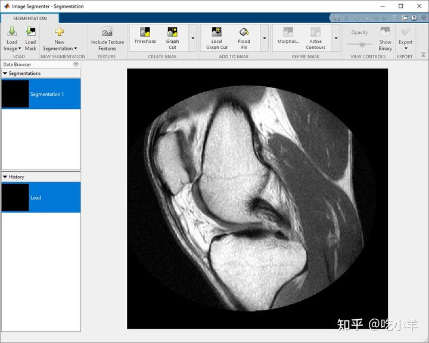

Home
本示例展示了如何使用Image Segmenter应用程序的功能来完善您使用该应用程序创建的蒙版图像的外观。Image Segmenter 应用程序包括几个形态学操作，您可以使用它们来修复蒙版图像中的小瑕疵。
在图像分割器中加载图像
打开Image Segmenter应用程序并加载要分割的图像。该图像分段可以打开imread，读取任意文件。
对于本示例，首先将图像读入工作区。此示例使用膝盖的 MRI 图像。目标是创建一个蒙版图像，从图像中的软组织中分割出骨骼。
I = dicomread('knee1');
knee = mat2gray(I);
从 MATLAB® 工具条中，打开Image Segmenter应用程序。在应用程序选项卡上的图像处理和计算机视觉部分，单击Image Segmenter图标

在应用程序工具条上，单击加载，然后选择从工作区加载图像。在从工作区导入对话框中，选择您读入工作区的图像。该Image Segmenter应用所显示您所选择的图像。

您还可以使用imageSegmenter命令，在Image Segmenter应用程序中打开图像：
imageSegmenter(knee);
加载图像后，您可以选择加载现有的二进制蒙版。例如，您之前可能已经通过绘制 ROI 创建了一个蒙版。要加载现有蒙版，请单击加载蒙版。分割蒙版图像必须是与您要分割的图像大小相同的逻辑图像。
创建蒙版图像
使用 ROI 绘图工具创建图像的粗分割。使用活动轮廓完成分割。有关此过程的更多详细信息，请参阅相关文档。
完成分割后，单击分割选项卡上的显示二进制以查看蒙版图像。仔细检查后，您可以在蒙版图像中看到几个小孔。
图像分割器包括用于细化二元蒙版的形态学工具。展开应用工具条的 Refine Mask 部分，然后单击Fill Holes。
这将删除二进制蒙版中的孔。
要保存二进制蒙版，请单击导出并选择导出图像。
======================================================================
我的测试结果及程序
下面是我测试的代码：

注：本文根据MATLAB官网内容修改而成。